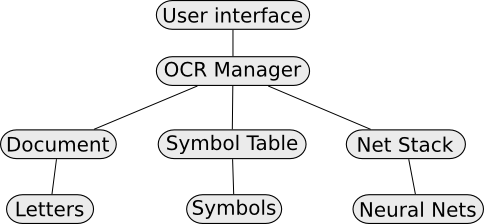
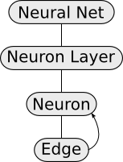
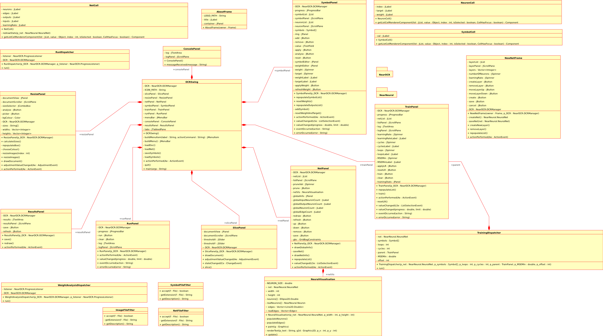
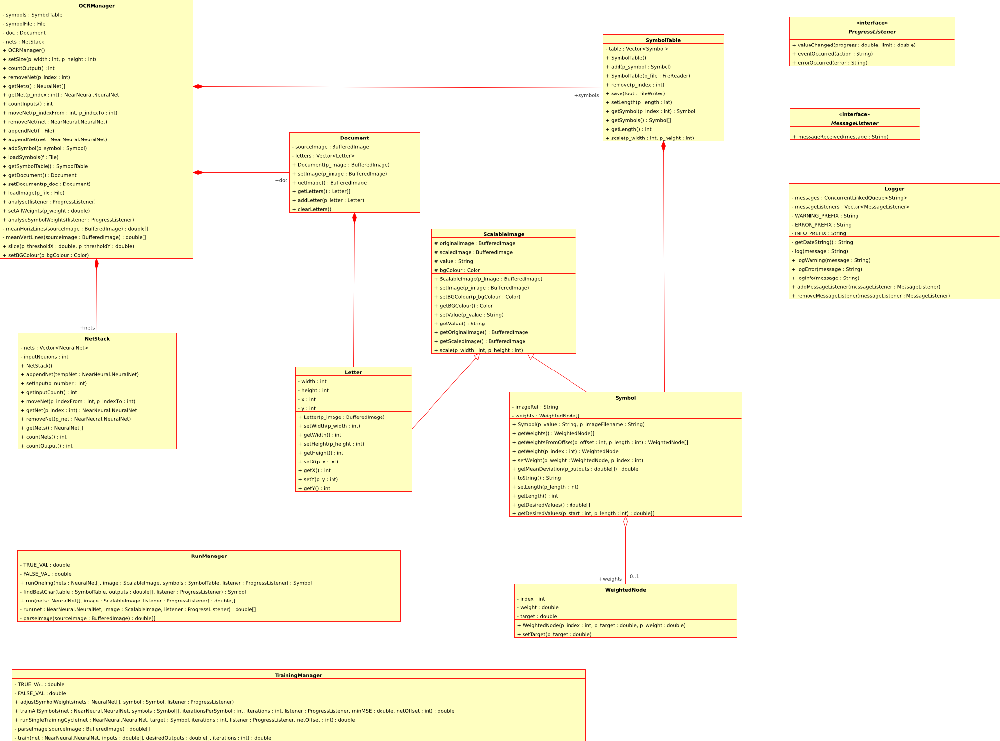
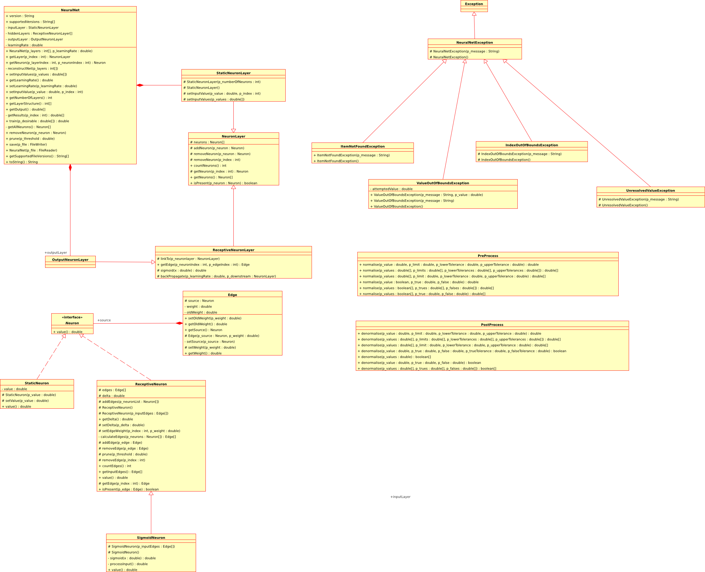
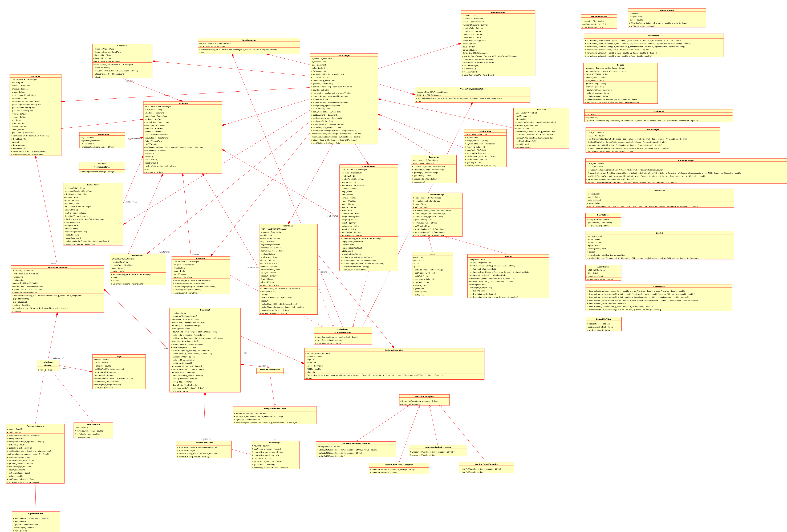

The problem, as defined by myself, was to implement the infrastructure necessary to perform basic, proof-of-concept optical character recognition on an average-case sample document or documents by way of a feed-forward neural net.
The problem with any such challenge is ultimately that any practical implementation of a net will take a restricted set of numerical values only. In my case, using a sigmoid-thresholded net, the outputs and inputs were severely restricted. The pre-parsing system that converts images into net-appropriate data thus needed to be reliable and accurate enough to allow the net to differentiate small changes in only certain pixels. I read about existing implementations and found that two methods were used amove others:
The other challenge was constructing an accurate symbol table. This was, at the time of starting the project, a completely unknown area for me - I could not find any existing implementations of the system I was planning, but could also not find how else this task could be accomplished. I believe this to be due to the fact that most OCR programs which utilise similar technologies come pre-trained for certain fonts and as such never distribute the code necessary to produce that data.
The symbol table, in the form I have implemented, takes the form of a series of letters (sharing a common superclass holding all image, sizing data and scaling algorithms) that have been instructed by the user how to perform at the output layer - they are aware of which outputs ought to be firing when they are run, and they are aware of what value their image equate to. This allows almost unsupervised training. With better nets this allows for the net to adapt as it is run and re-train notably absent or infrequently seen letters by merely re-training the net with that symbol. This would, however, require that the symbol table have a knowledge of common letter distributions and an algorithm capable of deciding what is unacceptable as deviation. Since the document is theoretically arbitrary and may not even include letters this would be data that is implausible for the user to procure - I'd even have trouble preparing training moderately useful sets.
The success of my training and analysis depends entirely but not solely on the nets. Nets which ahve been trained with incorrect data for the letters they are analysing will be utterly useless, likewise, it is possible to overtrain nets with good data, making them all but ignore everything but another input of the training data. Both of these problems are left entirely to the end user, as the program makes no assumptions about the quality, complexity or frequency of letters, nets or symbols. In so far as it is capable of training, running and manipulating neural nets in order to recognise characters the project was successful. It has proven a worthy proof of concept to the point that it may continue to be developed with the addition of some features as discussed in this document. I have managed to achieve ~60% accuracy rates when parsing characters of the correct font from a screenshot of a text editor and accuracy falls only slowly when noise is introduced, indicating a resilience that would be absent with a simple subtractive algorithm.
After much design I settled upon the following process for analysis.
This process allows for a lot of flexibility. My reasons for such choices are primarily related to the document, are are outlined below:
The implementation is splt into distinct layers and packaged appropriately. Encapsulating all OCR function is the NearOCR package, containing the class in control of all analysis and global data processing; OCRManager. This is designed as a primary interface to OCR function, allowing for an arbitrary user interface. The NearOCR package manages NearNeural neural nets, which are primarily managed through the NeuralNet class in a similar manner. Both packages have other classes accessible for access to advanced, if questionable, modifications to specific aspects and other data mining. The Swing based GUI then interfaces only with the OCRManager and its returned data, simplifying both it and access control, especially to restricted function such as the length of the symbol table, which must match the sum of the number of output neurons in the net stack.
The NearNeural libraries were rewritten from scratch for this project and improved immeasurably. They now support arbitrary thresholding algorithms, although I have only implemented sigmoid neurons and backpropagation algorithms. There was less room for modification here as the nets have a particular and set structure, although the *Layer classes now represent arbitraruly arranged sets of neurons, as the new version of NearNeural can handle non-layered and partially-connected nets. The architecture is illustrated loosely below.
The Swing UI was based around a single JFrame with multiple tabs, each of which attempted to represent a primary function of the OCR process to the user. A dialog to create new nets was also added as this was badly suited to the tabbing system.
The UI diagram:
The NearOCR package:
The NearNeural package:
The entire project:
